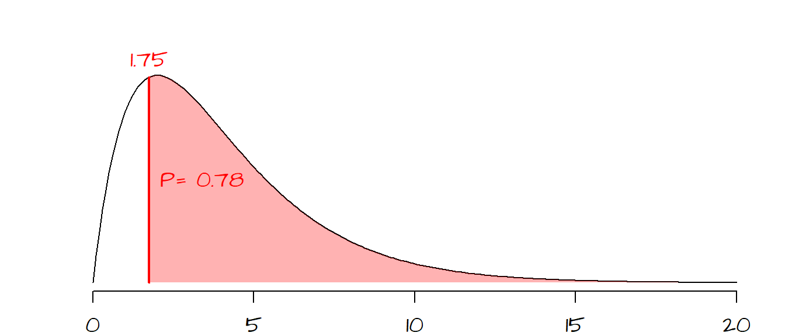
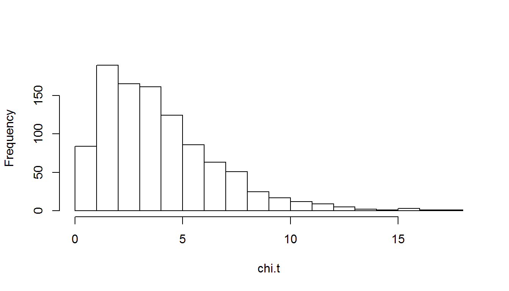
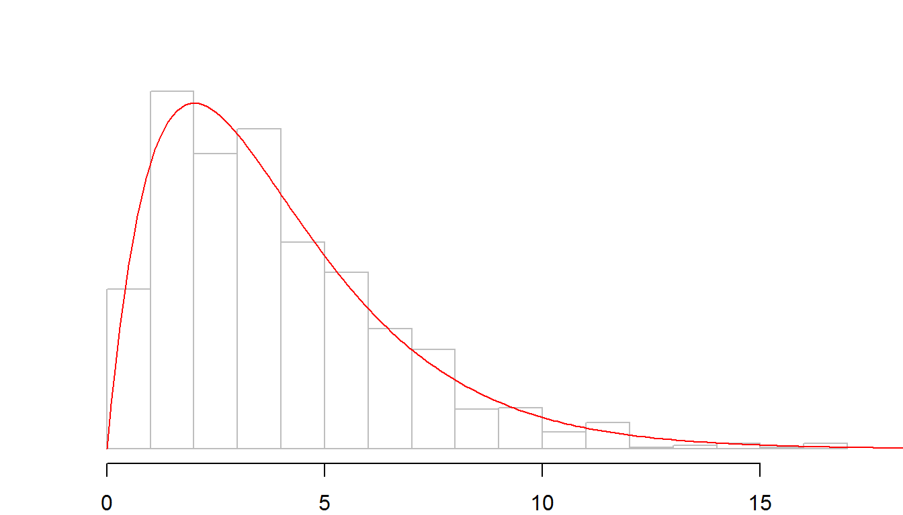
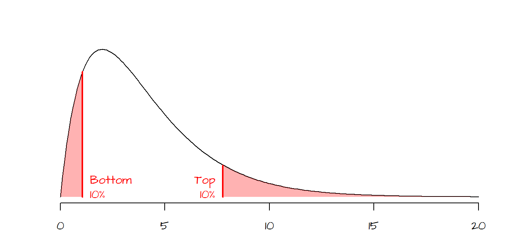
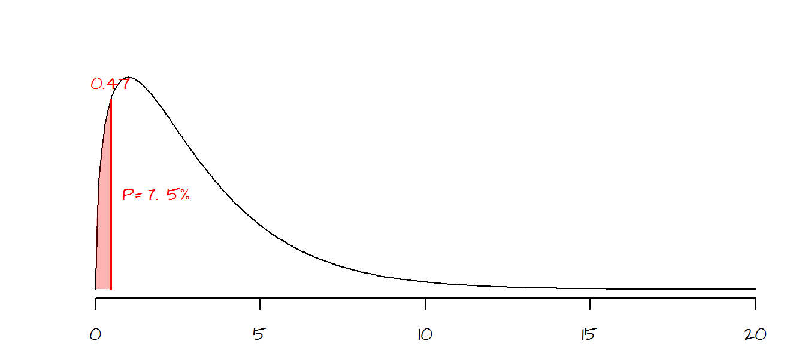
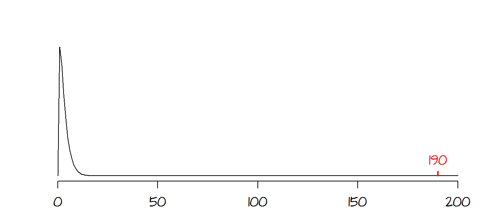
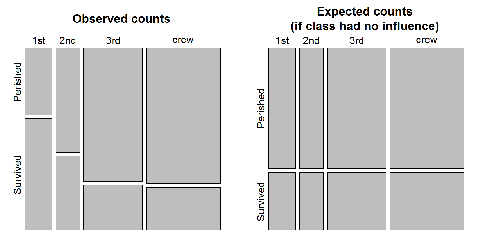
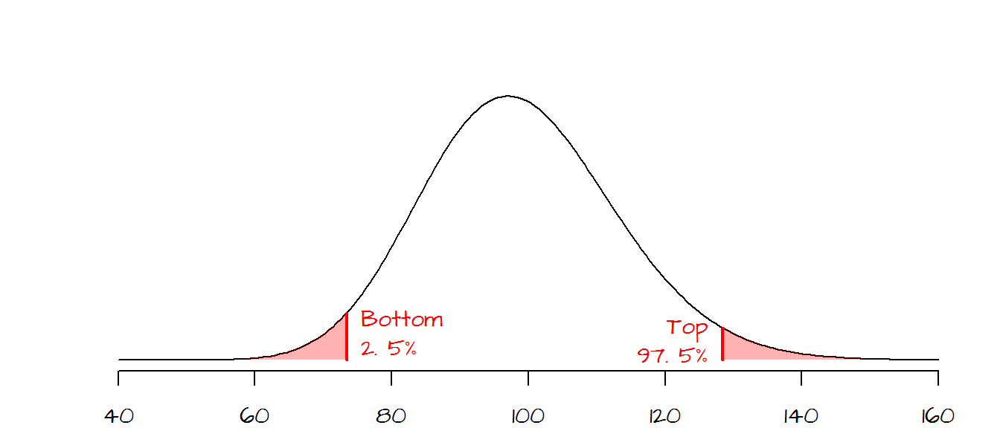
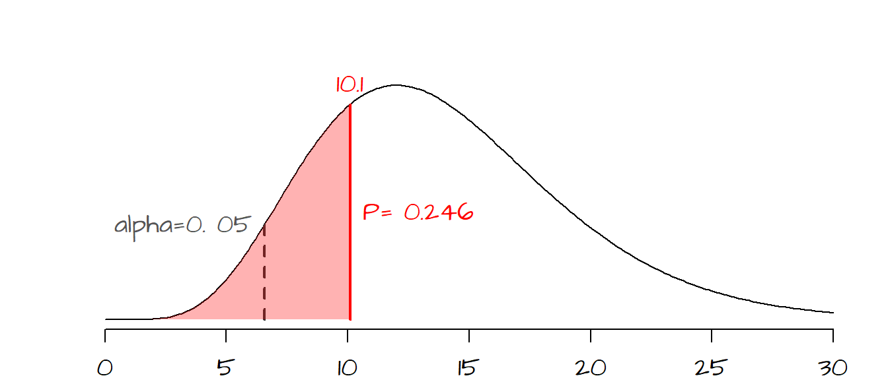

Comparing frequencies: Chi-Square tests
Last modified on 2016-05-21
1 Introduction
One important assumption made when using this test is that none of the expected frequencies be less than 5. If this assumption does not hold, then Yate’s correction should be applied using the correct=TRUE option in the chissq.test() function. Note that this setting is the default, i.e. the Yates correction gets applied unless correct is set to FALSE.
Also, if your contingency table has just two rows and two columns, then Fisher’s exact test (fisher.test) may be more appropriate.
2 Single factor classification
Pearson’s Chi-square test (\(\pmb\chi^2\)) tells us if the observed frequencies from a sample are consistent with a defined expected frequencies.
2.1 Example
2.1.1 Problem
If a survey of 200 individuals is conducted where the respondents are asked to select one of five answers, one might want to determine if all answers have an equal chance of being chosen, in other words, does each answer get selected about one fifth of the time (one out of five possible answers). So out of 200 respondents, we would expect to see each answer selected about 40 times given our null hypothesis that each answer had an equal chance of being selected. The observed and expected values can be summarized in a frequency table:
| Observed frequency | Expected frequency | |
|---|---|---|
| Answer 1 | 36 | 40 |
| Answer 2 | 44 | 40 |
| Answer 3 | 38 | 40 |
| Answer 4 | 37 | 40 |
| Answer 5 | 45 | 40 |
| ——————– | ——————- | |
| 200 | 200 |
Note that the totals in both the observed and expected columns should equal 200 (the number of respondents in this sample).
2.1.2 Solution
The \(\pmb\chi^2\)-statistic is the sum of the squared difference between observed and expected counts divided by the expected frequency, or, \[ \chi^2 = \sum{\frac{(observed frequency - expected frequency)^2}{expected frequency}} \] Computing \(\chi^2\) for our data we get: \[ \chi^2 = \frac{(36-40)^2}{40} + \frac{(44-40)^2}{40} + \frac{(38-40)^2}{40} + \frac{(37-40)^2}{40} + \frac{(45-40)^2}{40} = 1.75 \]
Next, we need to see where our \(\chi^2\) value lies on a \(\pmb\chi^2\)-curve. The shape of the \(\chi^2\) curve is defined by the degrees of freedom, \(df\) (this is analogous to the Student curve). \(df\) is computed from the number of possible outcomes minus one or \(df = 5 -1 = 4\) for our working example. The shape of the \(\chi^2\) curve for 5 \(df\) ’s and the placement of our \(\chi^2\) statistic on that curve are shown below:

The area highlighted in light red to the right of the \(\chi^2\) statistic shows the probability of a \(\chi^2\) value more extreme than the one observed. In other words, if the expected outcome was true (i.e. all answers having equal probability of being selected) the probability of coming up with a \(\chi^2\) more extreme than ours is 78%. Therefore we have a difficult time rejecting the null hypothesis and conclude that our observed frequencies are consistent with our null hypothesis and that any variability can be explained by chance alone.
The \(\chi^2\) can be easily implemented in R using the chisq.test() function.
obs <- c(36, 44, 38, 37, 45)
exp <- c(.20, .20, .20, .20, .20)
chisq.test(obs, p=exp)The output of the chisq.test function looks like this:
Chi-squared test for given probabilities
data: obs
X-squared = 1.75, df = 4, p-value = 0.7816The expected frequency values stored in the variable exp must be presented as fractions and not counts. Since all expected frequencies are equal, they all take on the fraction value of \(40/200 = 0.20\). The sum of the expected fraction must be 1 or R will return an error message. This ends our example.
2.2 The \(\chi^2\) curve explained
To understand what the \(\chi^2\) curve represents, we will run a simulation where one of the 5 answers is selected at random (assuming that all answers have equal probability of being picked as defined by \(H_o\)). Think of the simulation as consisting of 999 investigators who each survey 200 individuals at random. Also assume that we know that each answer has equal probability of being picked; this implies that only chance variability will generate counts of answers slightly off from what would be expected.
For each of the the 999 simulated samples, we compute \(\chi^2\) as was done in the previous example. We end up with 999 \(\chi^2\) values which we then plot using a histogram.
n <- 999 # Number of times to collect a sample
size <- 200 # Sample size (i.e. number of respondents)
exp <- c(.2, .2, .2, .2, .2) # Expected fractions
chi.t <- vector(length = n) # An empty vector that will store the Chi-sq values
for (i in 1:n){
survey.results <- sample( c(1,2,3,4,5), size = size, replace = TRUE)
survey.sum <- table(survey.results)
chi.t[i] <- chisq.test(survey.sum, p=exp)$statistic
}
hist(chi.t, breaks=20)This simulation consists of a for loop (think of each iteration of the loop as representing the survey results from one of the 999 investigators). For each iteration, one answer (out of five, each identified as c(1,2,3,4,5) in the code) is selected at random 200 times (this is what the sample() function does). The results are tallied in the variable survey.results. The table() function tallies the frequency of each selected answer. The chisq.test() function computes the \(\chi^2\) test and the $statistic parameter extracts the \(\chi^2\) statistic from the chisq.test() result. This statistic is tallied, resulting in 999 \(\chi^2\) values, which are then past to the hist() plotting function. The resulting histogram should look something like this:

The shape of the histogram is very close to the one defined by the \(\chi^2\) curve for 4 \(df\) (displayed as a red curve below).

2.3 Can the \(\chi^2\) value be ‘too’ good?
You’ll note that the \(\chi^2\) curve is positively skewed (and strongly so when the \(df\) is small), hence the probability of computing a very small \(\chi^2\) value diminishes precipitously when the test statistic approaches 0. The following graph shows the bottom and top 10% probability regions.

Gregor Mendel is credited with having set the ground work for modern day genetics by explaining heredity using garden peas in the mid 1800’s. He bred a pure yellow strain of peas and a pure green strain of peas. He then cross-pollinated the two colored peas to generate a 1st generation of hybrid peas. The result was a batch of all yellow peas (i.e. no visible trace of the green parent pea). Mendel then cross-pollinated the 1st generation peas to produce a second generation of peas. This second batch produced both green and yellow peas (about 25% green and 75% yellow).
In addition to color, Mendel also studied the physical characteristics of the peas, noting that peas were either smooth or wrinkled. Following the same experimental setup as that for the colored peas, Mendel noted that the second generation of peas produced roughly 25% wrinkled peas and 75% smooth peas.
One of his trials which mixed pea color and texture produced the following outcome (Freedman et al., p 470):
| Type of pea | Observed number |
|---|---|
| Smooth yellow | 315 |
| Wrinkled yellow | 101 |
| Smooth green | 108 |
| Wrinkled green | 32 |
| ————— | |
| sum = 556 |
Given the theory (based on the recessive/dominant nature of genes) that 75% of the peas would be yellow and that 75% of the peas would be smooth, we can come up with expected outcomes based on the following probability table (\(y\) = yellow, \(g\) = green, \(s\) = smooth and \(w\) = wrinkled):
| Color | Texture | Probability |
|---|---|---|
| y | s | 0.75 * 0.75 = 0.5625 |
| y | w | 0.75 * 0.25 = 0.1875 |
| g | s | 0.25 * 0.75 = 0.1875 |
| g | w | 0.25 * 0.25 = 0.0625 |
So, out of 556 peas, we would expect \(0.5625 \times 556 = 313\) peas having a \(y\)/\(s\) combination. Likewise, we would expect \(0.1875 \times 556 = 104\) peas having a \(y\)/\(w\) combination. We can compute the other two probabilities and create the following frequency table:
| Type of pea | Observed number | Expected |
|---|---|---|
| Smooth yellow | 315 | 313 |
| Wrinkled yellow | 101 | 104 |
| Smooth green | 108 | 104 |
| Wrinkled green | 32 | 35 |
| —————– | ——– | |
| 556 | 556 |
In the early 1900’s, the statistician Ronald Fisher was skeptical of Mendel’s experimental results. He used a \(\chi^2\) test to prove the point. The \(\chi^2\)-statistic for the color/texture experiment can be computed in R as follows:
obs <- c(315, 101, 108, 32)
exp <- c(0.5625, 0.1875, 0.1875, 0.0625)
chisq.test(obs, p = exp)
Chi-squared test for given probabilities
data: obs
X-squared = 0.47002, df = 3, p-value = 0.9254By default, chisq.test’s probability is given for the area to the right of the test statistic. Fisher was concerned with how well the observed data agreed with the expected values suggesting bias in the experimental setup. So we want to know how likely we are to calculate a \(\chi^2\) smaller than what would be expected by chance variation alone. The area of interest is highlighted in red in the following figure:

There is a 7.5% chance (\(1 - 0.9254 = 0.075\)) that an observed \(\chi^2\) would be smaller (i.e. one that is in even better agreement with the expect value) than the one observed if chance variability alone were to explain the difference. To Fisher, this small probability suggested that Mendel’s experimental setup may have been somewhat biased (but it must be noted the Mendel’s theory is sound and has been proven many times in separate experiments, but not with \(\chi^2\) probabilities as good as Mendel’s).
3 Two factor classification
In the previous section, we looked at single factor multinomial distribution. In this section we will focus on two-factor analysis.
Note that if there are only two categories in both factors (i.e. a 2x2 contingency matrix), you should use the fisher.test() function instead. The workflow should match the one shown here except that the fisher.test function should be called instead of the chisq.test function.
3.1 Example
3.1.1 Problem
Were passengers/crew members of different class status (i.e. 1st, 2nd, 3rd or crew) equally likely to perish in the Titanic?
| Perished | Survived | |
|---|---|---|
| 1st | 122 | 203 |
| 2nd | 167 | 118 |
| 3rd | 528 | 178 |
| crew | 673 | 212 |
3.1.2 Solution
This problem is a test of independence where we are testing whether the observed categorical counts are consistent with what we would expect if \(H_o\) (i.e. all classes of passengers/crew members had equal chance of perishing) was true.
The first step is to create what is a called a contingency table where we sum all rows and columns
| Perished | Survived | Row sums | |
|---|---|---|---|
| 1st | 122 | 203 | 325 |
| 2nd | 167 | 118 | 285 |
| 3rd | 528 | 178 | 706 |
| crew | 673 | 212 | 885 |
| ———- | ———- | ||
| 1490 | 711 |
Summing either the row sums or column sums gives us a total number of souls on the Titanic of 2201. This will be the value \(n\) in the next steps.
Next, we will compute the expected counts assuming that all classes of passenger and crew members had an equal probability of perishing. The formula to compute the expectation is simple. It’s the product of the row sum and column sum divided by the total number of souls. For example, for \(row\; 1\)/\(col\; 1\) (i.e. the total number of 1st class passengers that perished), the expected count assuming \(H_o\) is at play here is, \[ E(n_{11}) = \frac{r_1c_1}{n} = \frac{(325)(1490)}{2201} = 220 \] where \(N_{11}\) refers to cell \(row\; 1\)/\(col\; 1\). Likewise, we can compute the expected value for \(row\; 1\)/\(col\; 2\) as follows, \[ E(n_{12}) = \frac{r_1c_2}{n} = \frac{(325)(711)}{2201} = 105 \] The above procedure can be repeated for the remaining six cells giving the expected table:
| Perished | Survived | |
|---|---|---|
| 1st | 220 | 105 |
| 2nd | 193 | 92 |
| 3rd | 478 | 228 |
| crew | 599 | 286 |
Note that if you round the numbers (this is not required, you can work with decimal values as well), it is good practice to check that the total count adds up to \(n\) (i.e. 2201 in our working example).
The next step is to compute the \(\chi^2\) statistic between the observed and expected values. \[ \chi^2 = \frac{(122 - 220)^2}{220} + \frac{(203-105)^2}{105} + ... + \frac{(212-286)^2}{286} = 190.4 \]
The shape of the \(\chi^2\) curve is determined by the degrees of freedom, \(df\). For a two-factor analysis, \(df\) is the product of the number of rows minus one and the number of columns minus one or, \[ df = (rows - 1)(columns - 1) \]
For our working example, the \(df\) is \((4-1)(2-1)=3\). Our observed \(\chi^2\) value falls to the very far right side of the \(\chi^2\) curve. It’s clear that the probability of coming up with a \(\chi^2\) value as extreme as ours is nearly 0, in other words it’s very likely that the observed discrepancy in survival rates between classes and crew members is not due to chance variability.

The \(\chi^2\) value (and associated \(P\) value) can be easily computed in R as demonstrated in the following blocks of code. First, we create the data frame that will store the counts.
# Create the data frame
dat <- data.frame(Perished = c(122,167,528,673),
Survived = c(203,118,178,212),
row.names = c("1st", "2nd", "3rd", "crew"))The data frame can be viewed by calling the data frame dat,
dat Perished Survived
1st 122 203
2nd 167 118
3rd 528 178
crew 673 212The \(\chi^2\) test can then be computed as follows:
chisq.test(dat)
Pearson's Chi-squared test
data: dat
X-squared = 190.4, df = 3, p-value < 0.00000000000000022If you want to see the expected count table along with additional contingency table data, you can store the output of the chisq.test() to a variable, then extract additional information from the function.
chi.t <- chisq.test(dat)The expected values can be extract from the variable chi.t as follows:
chi.t$expected Perished Survived
1st 220.0136 104.98637
2nd 192.9350 92.06497
3rd 477.9373 228.06270
crew 599.1140 285.88596We can also visualize the frequencies between expected and observed using the mosaicplot() function.
OP <- par(mfrow=c(1,2), "mar"=c(1,1,3,1))
mosaicplot(chi.t$observed, cex.axis =1 , main = "Observed counts")
mosaicplot(chi.t$expected, cex.axis =1 , main = "Expected counts\n(if class had no influence)")
par(OP)
The polygons are proportional to the count values. Note how many more 1st class passengers survived the sinking of the Titanic then what would have been expected had class not played a role in who perished and who survived.
4 Three or more factor classification
When data are broken down across three or more factors, a loglinear model needs to be implemented.
A three (or more) factor table is a bit more difficult to tabulate. Such data can be stored as a long format table, or as an n-dimensional table. For example, R has a built in dataset called Titanic that breaks down the survive/perish count across 4 dimensions/factors. The data are stored as a table and can be displayed by simply typing the dataset at the command prompt:
Titanic, , Age = Child, Survived = No
Sex
Class Male Female
1st 0 0
2nd 0 0
3rd 35 17
Crew 0 0
, , Age = Adult, Survived = No
Sex
Class Male Female
1st 118 4
2nd 154 13
3rd 387 89
Crew 670 3
, , Age = Child, Survived = Yes
Sex
Class Male Female
1st 5 1
2nd 11 13
3rd 13 14
Crew 0 0
, , Age = Adult, Survived = Yes
Sex
Class Male Female
1st 57 140
2nd 14 80
3rd 75 76
Crew 192 20You can also use the ftable function to generate a more attractive output:
ftable(Titanic) Survived No Yes
Class Sex Age
1st Male Child 0 5
Adult 118 57
Female Child 0 1
Adult 4 140
2nd Male Child 0 11
Adult 154 14
Female Child 0 13
Adult 13 80
3rd Male Child 35 13
Adult 387 75
Female Child 17 14
Adult 89 76
Crew Male Child 0 0
Adult 670 192
Female Child 0 0
Adult 3 20The number of dimensions can be extracted from a table using the dim function:
dim(Titanic)[1] 4 2 2 2There are four dimensions, each having for levels: 4, 2, 2 and 2.
We can extract the names of the dimensions along with the names of each dimension’s factors using the dimnames function:
dimnames(Titanic)$Class
[1] "1st" "2nd" "3rd" "Crew"
$Sex
[1] "Male" "Female"
$Age
[1] "Child" "Adult"
$Survived
[1] "No" "Yes"For example, the first dimension, Class, has four factors: 1st, 2nd, 3rd and Crew.
Note that you can convert an n-dimensional table to an R data frame as follows:
as.data.frame(Titanic) Class Sex Age Survived Freq
1 1st Male Child No 0
2 2nd Male Child No 0
3 3rd Male Child No 35
4 Crew Male Child No 0
5 1st Female Child No 0
6 2nd Female Child No 0
7 3rd Female Child No 17
8 Crew Female Child No 0
9 1st Male Adult No 118
10 2nd Male Adult No 154
11 3rd Male Adult No 387
12 Crew Male Adult No 670
13 1st Female Adult No 4
14 2nd Female Adult No 13
15 3rd Female Adult No 89
16 Crew Female Adult No 3
17 1st Male Child Yes 5
18 2nd Male Child Yes 11
19 3rd Male Child Yes 13
20 Crew Male Child Yes 0
21 1st Female Child Yes 1
22 2nd Female Child Yes 13
23 3rd Female Child Yes 14
24 Crew Female Child Yes 0
25 1st Male Adult Yes 57
26 2nd Male Adult Yes 14
27 3rd Male Adult Yes 75
28 Crew Male Adult Yes 192
29 1st Female Adult Yes 140
30 2nd Female Adult Yes 80
31 3rd Female Adult Yes 76
32 Crew Female Adult Yes 20Conversely, if your data is in a dataframe format, you can convert to an n-dimensional table using the xtabs() function (e.g. xtabs( Freq ~ Class+Survived+Age+Sex , as.data.frame(Titanic))).
It turns out that Pearson’s \(\chi^2\) test can be expressed as a linear regression model where each dimension level is coded as a dummy variable. However, since we are using categorical data, we need to apply a log transformation to the values, hence the use of a loglinear model.
For example, using the two-category table from the last section, we can express the relationship between variables and counts as follows:
\[ ln(count) = b_0 + \color{blue}{b_1Class2 + b_2Class3 + b_3Crew + b_4Survived} + \\ \color{red}{b_5Class2 \times Survived + b_6Class3 \times Survived + b_7Crew \times Survived} + ln(error) \]
where each variable can take on one of two values: 0 (no) or 1 (yes). The terms highlighted in blue are the main effects and the variables highlighted in red are the interactive terms (these are the terms of interest to us).
For example, the number of passengers in 1st class who survived the accident is 203. This case can be expressed as:
\[ ln(203) = (1) + \color{blue}{b_1(0) + b_2(0) + b_3(0) + b_4(1)} + \\ \color{red}{b_5(0) \times (1) + b_6(0) \times (0) + b_7(0) \times (1)} + ln(error) \]
Note that there is no \(Class1\) variable, this is simply because this variable would be superfluous since \(Class2=Class3=Crew=0\) implies that the passenger was in 1st class.
What we are interested in doing here is to find the most parsimonious loglinear model (i.e. the one with the fewest terms possible) that will faithfully recreate the counts in our table. The aforementioned model is referred to as a saturated model in the sense that it has all the terms needed to reproduce our output exactly. Our interest lies in seeing if eliminating the interactive terms produces a model that still does a decent job in predicting the counts. If it does not, then this implies that the different categories have an influence on the observed counts (i.e. there is lack of independence).
There are several functions in R that can perform this analysis, one of which is the function loglm() from the MASS package.
We will first create a data matrix from the Titanic dataset:
Tit1 <- apply(Titanic, c(1, 4), sum)Remember that the Titanic dataset is a multi-category table. Typing str(Titanic) will list all the attributes associated with that table. The function apply is aggregating the counts of passengers by Class (first attribute in the table Titanic) and by Survived (fourth attribute in the table).
The content of Tit1 is a matrix.
Survived
Class No Yes
1st 122 203
2nd 167 118
3rd 528 178
Crew 673 212We will first create the saturated model.
library(MASS)
M <- loglm( ~ Class * Survived, dat=Tit1, fit=TRUE)The model is defined by the expression ~ Class * Survived. The multiplier * is not a true multiplier in this context. It’s just an R syntax that tells the function loglm that both the main effects and interactive effects are to be included in the model (the alternative is to type out the full expression ~ Class + Survived + Class:Survived). You might want to refer to the linear regression section for more information on model syntax.
Now let’s look at the model output (i.e. the object M).
Call:
loglm(formula = ~Class * Survived, data = Tit1, fit = TRUE)
Statistics:
X^2 df P(> X^2)
Likelihood Ratio 0 0 1
Pearson 0 0 1Note the Pearson \(\chi^2\) \(P\) value of 1. This indicates that their is no difference between the model output and our observed counts. This is to be expected since we are accounting for all parameters in the model.
Next, we will modify the model to see if the interactive term contributes significantly to the model’s ability to predict the true observed counts. Again, there are several ways this can be done. The simplest is to take the last model M and omit the interactive term Class:Survived using the function update().
M2 <- update( M, ~ . - Class:Survived)The syntax ~ . simply tells R to use the last model and the syntax - Class:Survived (note the minus sign) tells R to omit this variable from the model. update reruns the model defined by M without the interactive term Class:Survived.
Let’s look at the M2 output:
Call:
loglm(formula = ~Class + Survived, data = Tit1, fit = TRUE)
Statistics:
X^2 df P(> X^2)
Likelihood Ratio 180.9014 3 0
Pearson 190.4011 3 0If the output looks familiar (as it should) this is because Pearson \(\chi^2\) value of 190.4 and the associated \(P\) value of \(\approx0\) is exactly what we computed in the last section when we used the chisq.test function. This result tells us that when we remove the interactive categories, the model (M2) output gives predicted passenger counts significantly different from what was observed. To see the predicted values, type the following:
M2$fitted Survived
Class No Yes
1st 220.0136 104.98637
2nd 192.9350 92.06497
3rd 477.9373 228.06270
Crew 599.1140 285.88596These are the same expected values as those computed in the last section (see variable chi.t$expected). The model M2 predicts the counts of passengers assuming that there is no difference between categories. Had the interactive terms Class:Survived not been a factor (i.e. had the observed counts in our table not been biased by any category), we would have had a Pearson \(\chi^2\) \(P\) value much larger in the \(M2\) output.
Let’s now test for independence on a more complicated table; i.e. one with three categories (where gender is added tot he mix):
Tit2 <- apply(Titanic, c(1,2,4), sum)We can view the table subset using the ftable() function.
ftable(Tit2) Survived No Yes
Class Sex
1st Male 118 62
Female 4 141
2nd Male 154 25
Female 13 93
3rd Male 422 88
Female 106 90
Crew Male 670 192
Female 3 20Now lets generate our saturated model to ensure that we can reproduce the observed counts exactly. Don’t forget to add the third term, Sex, to the model.
library(MASS)
M <- loglm( ~ Class * Survived * Sex, dat=Tit2, fit=TRUE)A quick check of the model output should confirm that we have a saturated model.
Call:
loglm(formula = ~Class * Survived * Sex, data = Tit2, fit = TRUE)
Statistics:
X^2 df P(> X^2)
Likelihood Ratio 0 0 1
Pearson 0 0 1Because we now have three categories (i.e. Class, Survived and Sex) as opposed to two (i.e. Class and Survived) we now have three interaction terms. Two two-way terms, Class:Survived and Class:Sex, and one three-way term, Class:Survived:Sex. In this case, we will first remove the three-way interaction term.
M2 <- update( M, ~ . - Class:Survived:Sex)Checking the model output indicates that without the three-way interaction term we have model that does a very poor job in predicting our observed counts:
Call:
loglm(formula = ~Class + Survived + Sex + Class:Survived + Class:Sex +
Survived:Sex, data = Tit2, fit = TRUE)
Statistics:
X^2 df P(> X^2)
Likelihood Ratio 65.17985 3 0.00000000000004596323
Pearson 60.87114 3 0.00000000000038291592This implies that all three categories have disproportionate influence on the number of passengers who survived or perished in the Titanic accident. At this point we stop the analysis. Had we had a large \(P\) value in \(M2\), then we would have continued scaling back the model by removing one of the two-way interaction terms then looking at new model output. You continue this until you find a model with a small \(\chi^2\) \(P\) value (at which point you can say that the last term removed contributes significantly to the model’s count prediction).
Before reporting the results, it is a good idea to compare the saturated model with model M1 (the model we ended up rejecting) using the anova() function.
anova(M, M2)LR tests for hierarchical log-linear models
Model 1:
~Class + Survived + Sex + Class:Survived + Class:Sex + Survived:Sex
Model 2:
~Class * Survived * Sex
Deviance df Delta(Dev) Delta(df) P(> Delta(Dev)
Model 1 65.17985 3
Model 2 0.00000 0 65.17985 3 0
Saturated 0.00000 0 0.00000 0 1The anova() function computes the difference in likelihoods for the two models (look for the Delta(Dev) term in the output which is 65.2 in our working example). The \(P\) value associated with this difference is significant (P(>Delta(Dev)) = \(0\)). We can therefore report this three-way loglinear analysis by stating that the highest order interaction ClassSurvivedSex was signifcant with a \(\chi^2\) of 65.2 and a \(P\) value less than 0.001.
5 Inferences about population variance
The \(\chi^2\) test can also be used to estimate uncertainty in our estimate of the population variance just as we sometimes want to make inferences about a population mean using confidence intervals. An important assumption that must be met here is that the population follows a normal (Gaussian) curve. If such an assumption cannot be made, alternate (non-parametric) methods should be used.
\(\chi^2\) is computed a bit differently,
\[ \chi^2 = \frac{(n-1)s^2}{\sigma^2} \]
where \(n-1\) is the degrees of freedom, \(s^2\) is the sample’s variance (or the square of the standard deviation,\(s\)) and \(\sigma^2\) is the population variance.
5.1 Computing confidence intervals for variances
5.1.1 Example
If a sample of size 100 has a standard deviation, \(s\), of 10.95. What is the standard deviation’s confidence interval for an \(\alpha\) of 0.05?
5.1.2 Solution
To compute the \(\chi^2\)-statistics that will define the confidence interval, \(CI\), we need to identify the probabilities (\(P\)-values) that define the ‘rejection’ regions of the \(\chi^2\) curve. Given that we can compute the degrees of freedom (100 -1 = 99) and that we are given an \(\alpha\) value of 0.05, we can draw the \(\chi^2\) curve and identify the ‘rejection’ regions. This problem can be treated as a two-tailed test with a lower \(P\) value of \(0.05/2=0.025\) and an upper \(P\) value of \(1 - 0.05/2=0.975\), however, unlike a hypothesis test where we seek one \(\chi^2\) value, we are looking for two \(\chi^2\) values.

The two \(\chi^2\) values that define the interval can now be computed using the qchisq() function.
qchisq(p = 0.025, df = 99)[1] 73.36108qchisq(p = 0.975, df = 99)[1] 128.422Now that we have our \(\chi^2\) values, we can find the \(\sigma^2\) values (and by extension the standard deviation \(\sigma\)) that define the \(CI\). We simply solve the \(\chi^2\) equation for \(\sigma^2\): \[ \sigma^2 = \frac{(n-1)s^2}{\chi^2} \]
The confidence interval \(CI\) for the population variance is thus: \[ \frac{(n-1)s^2}{\chi_{0.925}^2} < \sigma^2 < \frac{(n-1)s^2}{\chi_{0.025}^2} \] or \[ \frac{(99)10.95^2}{128.4} < \sigma^2 < \frac{(99)10.95^2}{73.36} \] giving us \[ 92.4 < \sigma^2 < 161.8 \]
and the confidence interval for the population standard deviation, \(\sigma\) is: \[ \sqrt{92.4} < \sigma < \sqrt{161.8} \] or \[ 9.6 < \sigma < 12.72 \]
5.2 Test hypotheses on population variances
5.2.1 Example
A machine shop is manufacturing a part whose width must be 19“. The customer requires that the width have a standard deviation no greater than 2.0 \(\mu m\) with a confidence of 95%. 15 parts are sampled at random and their widths are measured. The sample standard deviation, \(s\), is 1.7 \(\mu m\). Is the standard deviation for all the parts, \(\sigma\), less than 2.0? (i.e. given that the sample’s \(s\) is susceptible to natural variability about its true value, can we be confident that the true population \(\sigma\) is less than 2.0)
5.2.2 Solution
The question asks that we test the null hypothesis, \(H_o\), that the standard deviation from the population, \(\sigma_o\), is less than \(2.0\). The sample standard deviation, \(s\), is 1.7. We need to test whether or not the difference between \(s\) and \(\sigma_o\) is do to chance variability or if the difference is real. Since we will be using the \(\chi^2\) test, we will need to work with variances and not standard deviations, so \(H_o\) must be stated in terms of \(\sigma_o^2\) and not \(\sigma_o\). Our test statistic is therefore computed as follows:
\[ \chi^2 = \frac{(n-1)s^2}{\sigma_o^2} = \frac{(15-1)1.7^2}{2.0^2} = 10.1 \]
The probability of getting a \(\chi^2\) of 10.1 is 0.246 (or 24.6%). So if chance variability alone were to explain the difference between our observed \(\chi^2\) value and the hypothesized \(\chi^2\) value associated with \(\sigma_o^2\), there would be a 24.6% chance of getting a \(\chi^2\) as extreme as ours. Now the customer wants to be 95% confident that the difference between our observed \(s\) and the threshold \(\sigma_o\) of 2.0 is real (i.e. that it’s less than 2.0) and not due to chance variability. This is tantamount to a one-sided hypothesis test where \[ H_o: \sigma^2 = 2.0^2 \] \[ H_a: \sigma^2 < 2.0^2 \]
where \(\sigma\) is the standard deviation of the width for all parts being manufactured. The customer wants to be 95% confident that \(\sigma\) is less than 2.0. This translates to having an observed \(P\) closer to the left tail of the distribution. The exact cutoff is 95% from the right-hand side, or 5% from the left hand side (dashed line in the following graph). Our observed \(P\) value of 0.246 is greater than the desired \(\alpha\) value of 0.05 meaning that there is a good chance that our observed difference in width variance is due to chance variability (at least at the 5% confidence level). We therefore cannot reject the null and must inform the customer that the machined parts do not meet the desired criteria.

The test can easily be implemented in R as follows:
chi.t <- (15 - 1) * 1.7^2 / 2.0^2
pchisq(chi.t, 15-1)[1] 0.2462718where the pchisq() function returns the probability for our observed \(\chi^2\) value with a \(df\) of \((15-1)\).
6 References
Freedman D.A., Robert Pisani, Roger Purves. Statistics, 4th edition, 2007.
McClave J.T., Dietrich F.H., Statistics, 4th edition, 1988.
Session Info:
R version 3.3.0 (2016-05-03)
**Platform:** x86_64-w64-mingw32/x64 (64-bit)
attached base packages: stats, graphics, grDevices, utils, datasets, methods and base
other attached packages: MASS(v.7.3-45) and tidyr(v.0.4.1)
loaded via a namespace (and not attached): Rcpp(v.0.12.5), Rttf2pt1(v.1.3.4), knitr(v.1.13.1), magrittr(v.1.5), xtable(v.1.8-2), R6(v.2.1.2), stringr(v.1.0.0), dplyr(v.0.4.3), tools(v.3.3.0), parallel(v.3.3.0), miniUI(v.0.1.1), DBI(v.0.4-1), extrafontdb(v.1.0), htmltools(v.0.3.5), lazyeval(v.0.1.10), yaml(v.2.1.13), digest(v.0.6.9), assertthat(v.0.1), bookdown(v.0.0.71), shiny(v.0.13.2), formatR(v.1.4), evaluate(v.0.9), mime(v.0.4), rmarkdown(v.0.9.6.9), stringi(v.1.0-1), pander(v.0.6.0), extrafont(v.0.17) and httpuv(v.1.3.3)
 Manny Gimond
Manny Gimond